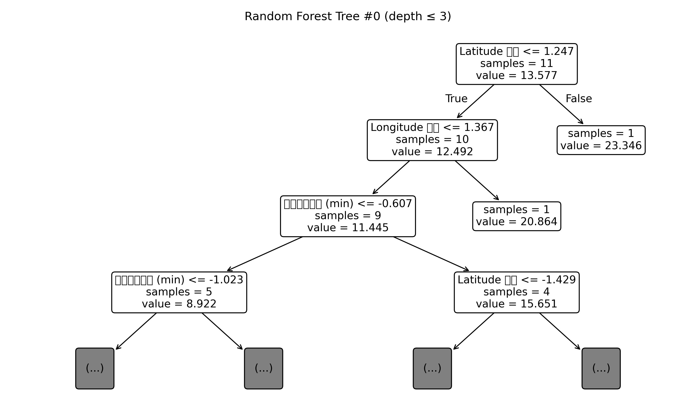
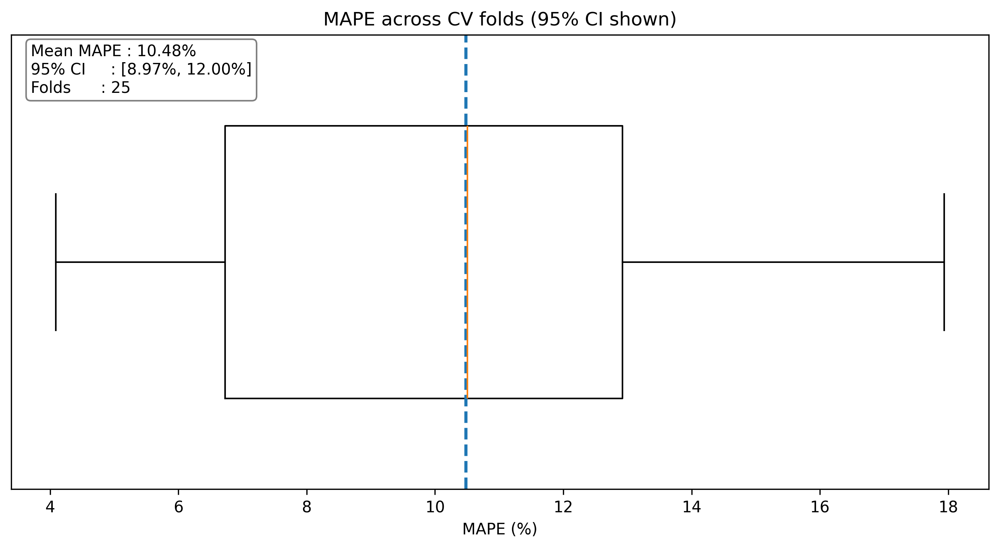
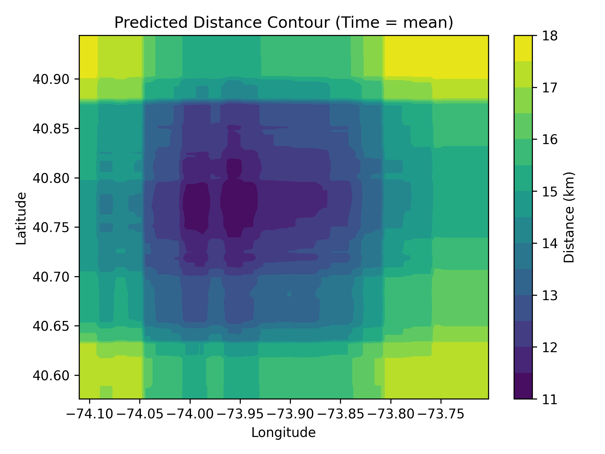
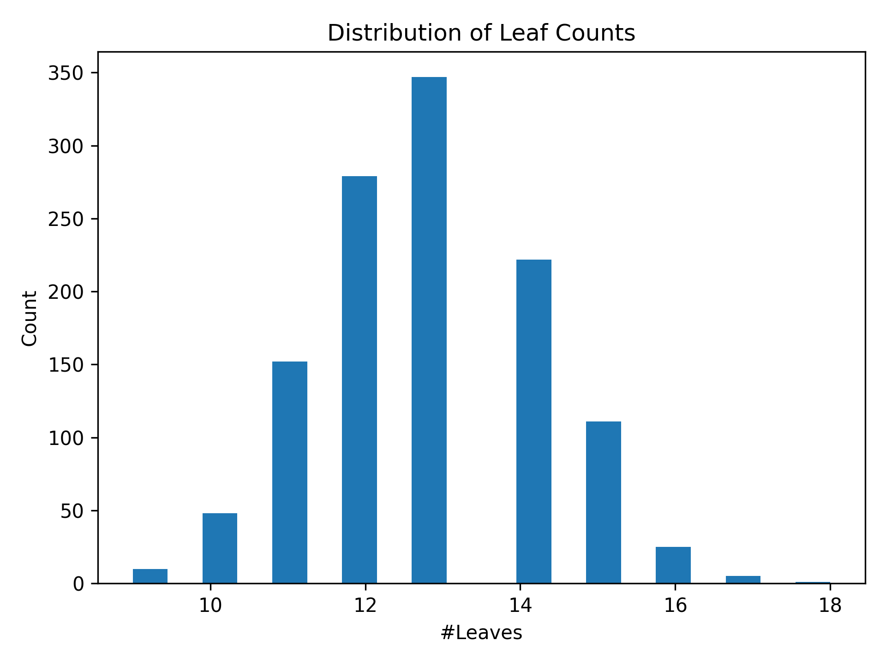
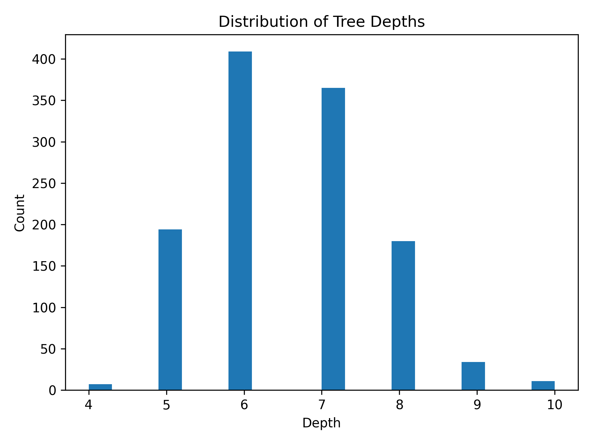
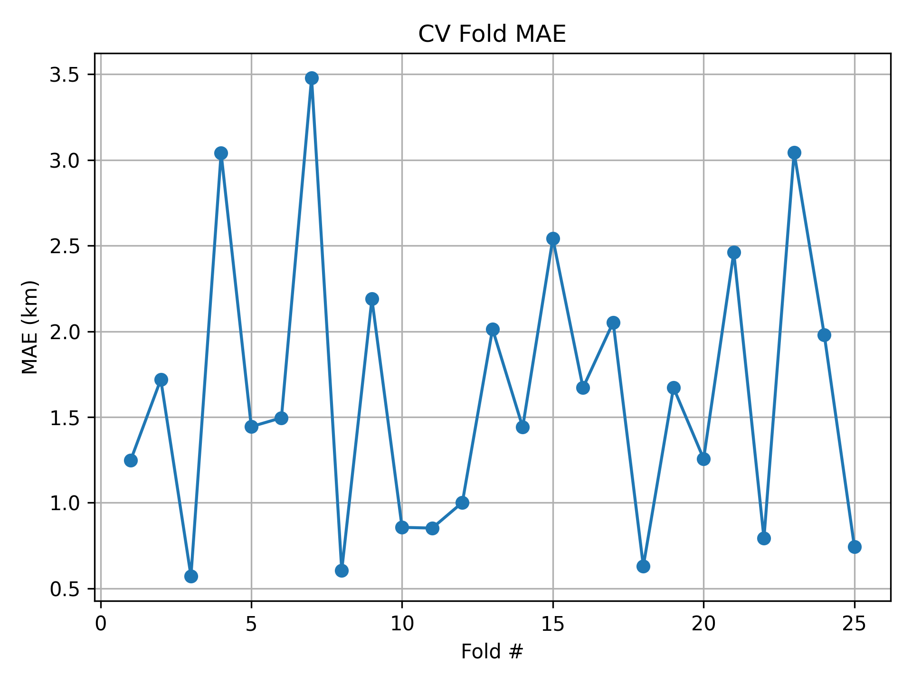

Peifeng Yu’s Research Project for Schneider Electric Global Student Experience
(Continued with UBC Sauder BCom Capstone Class 414 Business Analytics and Machine Learning)
Micro-Hub Placement for Manhattan Reverse Logistics
GIS simulation × Random Forest analytics
Random Forest Model Key Statistics & Visualized Summaries
     